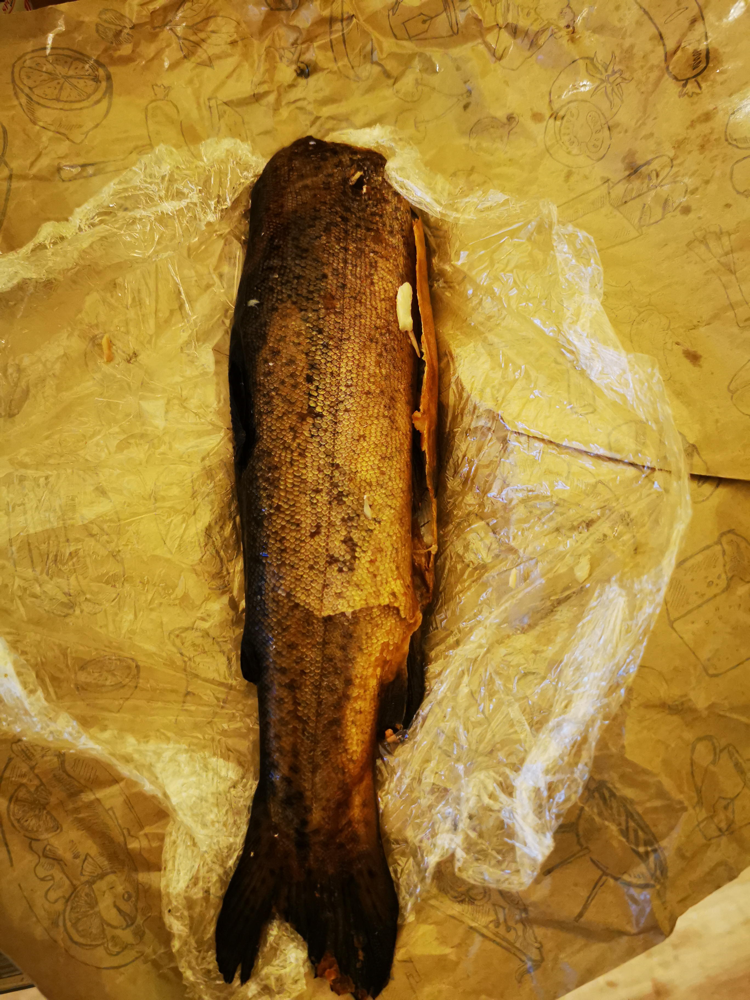

Smoked fish without head
Perfect protein source

Ingredients:
- Supermarket-grade ready to eat smoked fish
Step by step guide:
- Check the freshness of fish smoked in the store.
- If it seems they haven't been on the shelf for more than a week than buy smoked fish from your local supermarket.
- Unpack the fish and consume without fish bones.
Tip: Unfortunately stretch foil is not edible.
Back to main page